Turbo, B207
Turbo, B207To remove
Warning
The turbocharger can be hot and great care must be observed.
Warning
The cooling system is under pressure. Hot coolant and steam can escape.
- Open the cap slowly to release the pressure.
- Carelessness can cause eye and burn injuries
1. Carefully undo the cap on the expansion tank to release the pressure.
2. Unplug the connectors for the oxygen sensors (A) and carefully lower the cables.

3. Remove the air cleaner casing and intake hose to the turbo. Separate the casing first. Remove the hose to the crankcase ventilation. (A)
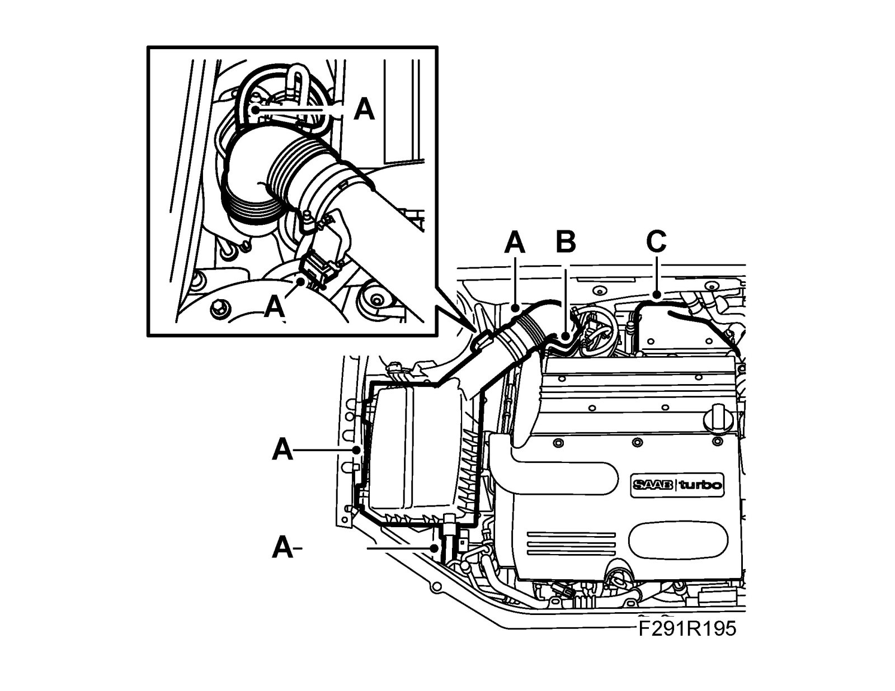
4. Remove the crankcase ventilation hose (B) from the camshaft cover and the turbo inlet.
5. Remove the heat shield (C) over the turbo.
6. Detach the solenoid valve hoses from the turbo (A).
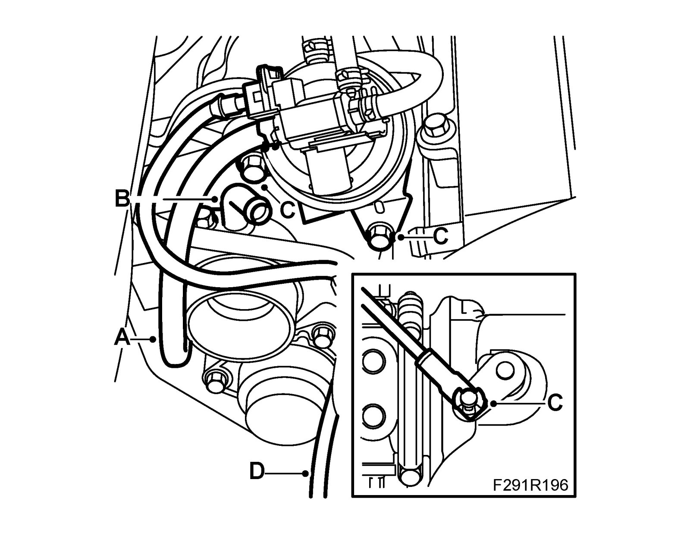
7. Remove the pipe connection for the crankcase ventilation (B).
8. Remove the retaining clip from the turbo control arm using a pair of flat nose pliers and a screwdriver. Remove the vacuum box from the turbo. (C)
9. Remove the hose (D) from the turbo's bypass valve.
10. Remove the upper oxygen sensor (A). Move away the coolant reservoir for better access to the nuts.
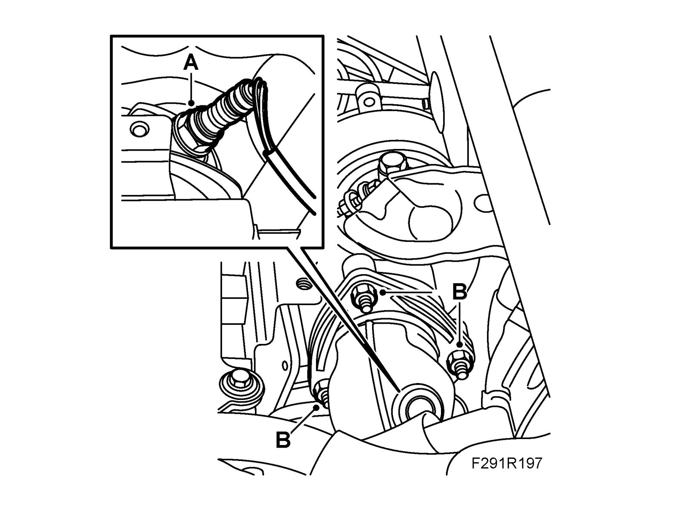
11. Remove the nuts (B) for the catalytic converter connection to the turbocharger.
Important
When removing the nuts of the catalytic converter, it is important to hold the removal tool vertically against the flange. The stud and nut can easily be broken off if they are subjected to a skew loading. Use 82 92 484 Removal tool, door hinge.
12. Raise the car.
13. Remove the front spoiler shield. See Spoiler shield, removal.
CV: Remove Chassis reinforcement, front supporting frame, CV
14. Place a receptacle under the car, connect a hose to the radiator and drain it. Move the receptacle and drain the coolant pump. (A)
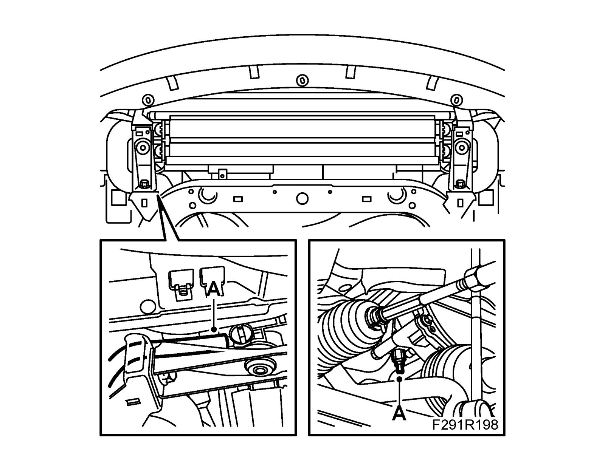
15. Close the cock on the radiator and fit the drain plug. Seal the threads with 74 96 284 Thread locking adhesive.
16. Lower the car.
17. Remove the turbo coolant pipe from the turbo and undo the coolant pipes' mounting on the cylinder head. (A)
Note
Grip the inner connection so it does not come loose from the turbo.
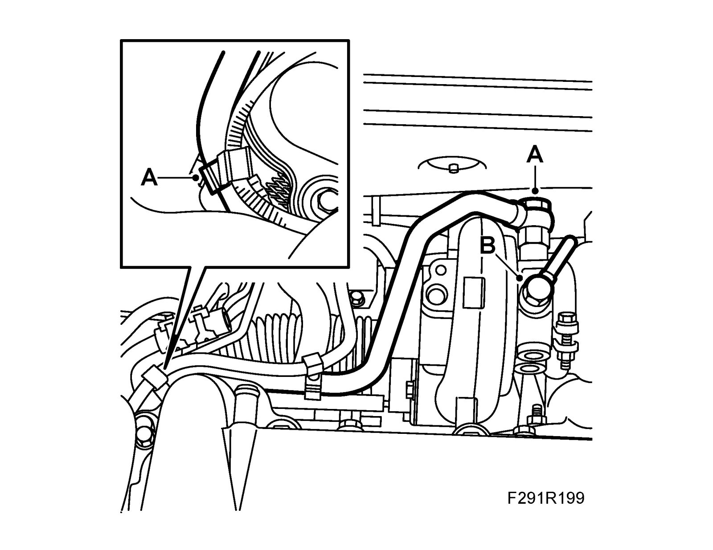
18. Remove the turbo oil pipe (B) from the turbo.
19. Raise the car.
20. Remove the lower turbocharger pressure pipe (A).

21. Remove the front pipe from the catalytic converter. See Front pipe, To remove
22. Remove the heat shield (A) over the catalytic converter and the mounting (B).
23. Remove the lower oxygen sensor (C).
24. Remove the catalytic converter mounting (D) from the engine block.
25. Remove the catalytic converter (E).
26. Remove the turbo coolant pipe (A) from the thermostat housing and turbo.
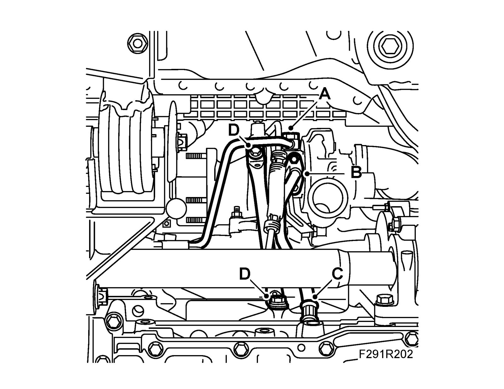
27. Remove the screws (B) to the turbo oil return pipe from the turbo.
Important
If the flexible part of the return oil pipe is bent, the resulting restriction may become permanent and cause damage to the turbocharger.
28. Remove pipe and its O-ring (C) from the connection hole in the engine block.
29. Remove the stay (D) between the engine block and the turbo.
30. Detach the turbo oil delivery pipe (A) from the engine block and remove the pipe.
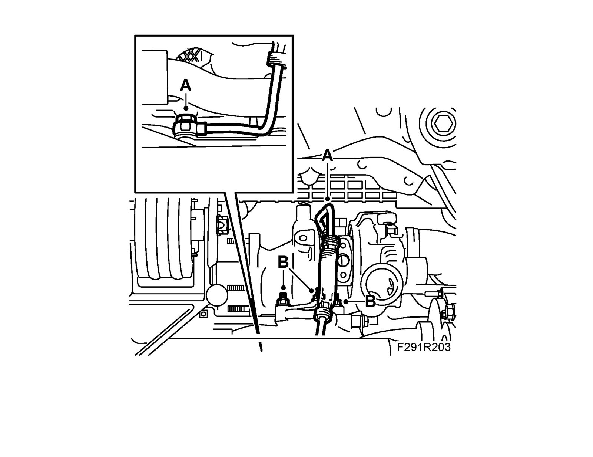
31. Remove and lift down the turbo (B).
To fit
1. Fit a new gasket.
2. Apply 30 20 971 Screw-thread paste to the turbo and exhaust manifold studs.
3. Lift up and fit the turbo (B)
Tightening torque 24 Nm (18 lbf ft).
4. Fit new sealing washers, screw in the bolt for the turbo oil delivery pipe on the engine block (A) without tightening it.
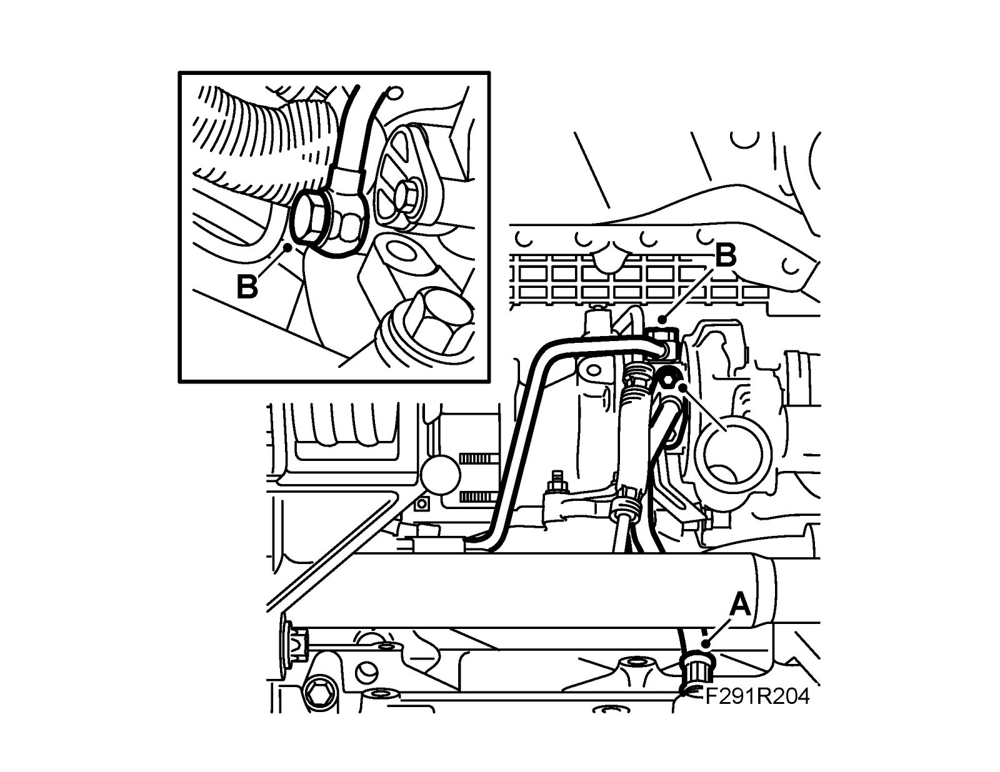
5. Fit the turbo oil return pipe to the turbo with a new gasket and connect the pipe with a new O-ring, sparingly lubricated with Vaseline, non-acidic, to the connecting hole in the engine block. (B)
Tightening torque, oil return pipe to turbo 15 Nm (15 lbf ft)
6. Fit the coolant pipe between the turbo and the thermostat housing with new sealing washers (B).
Tightening torque 20 Nm (15 lbf ft)
7. Fit the stay (A) between the turbo and engine block. Fit the bolts by hand, start by tightening the bolts in the turbo.
Tightening torque, bolt in turbo 32 Nm (24 lbf ft)
Tightening torque, screw in block 48 Nm (35 lbf ft)
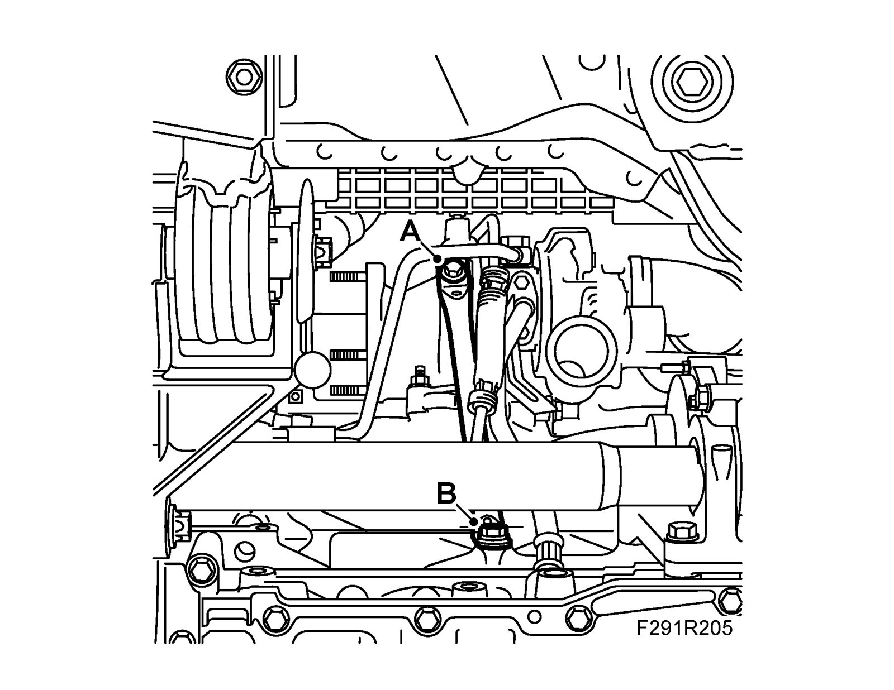
8. Lower the car.
9. Fill with plenty of engine oil in the hole for the oil delivery connection on the turbo while turning the turbine wheel.
10. Fit the oil delivery pipe to the turbo and tighten the connection using new sealing washers. Grip the pipe so that it does not rotate. (A)
Tightening torque 28 Nm (21 lbf ft)
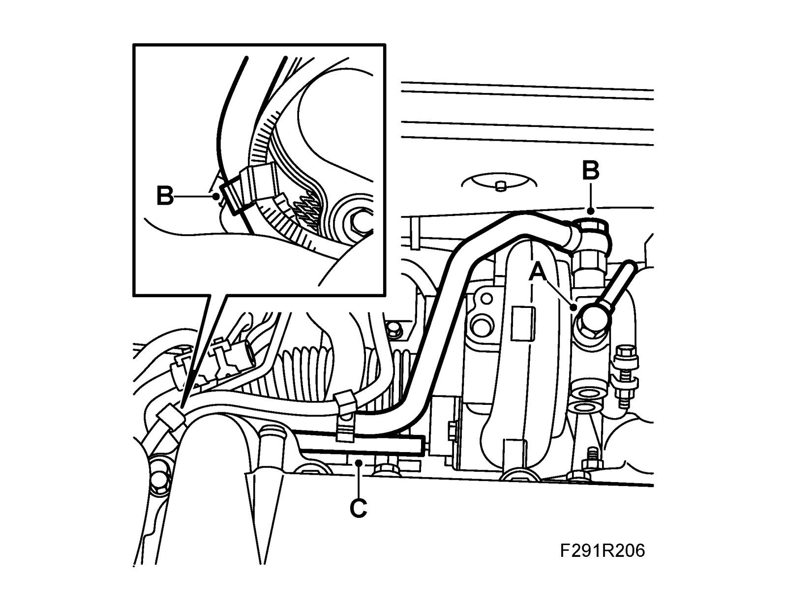
11. Position and fit the coolant pipe (B) to the turbo and tighten the pipe mounting on the cylinder head.
12. Connect the hose to the charge air bypass valve (C).
13. Raise the car.
14. Tighten the oil delivery pipe connection on the engine block.
Tightening torque 28 Nm (21 lbf ft)
15. Lift up the catalytic converter, position its bracket to the studs on the engine block and position the catalytic converter to the turbocharger connection (A).
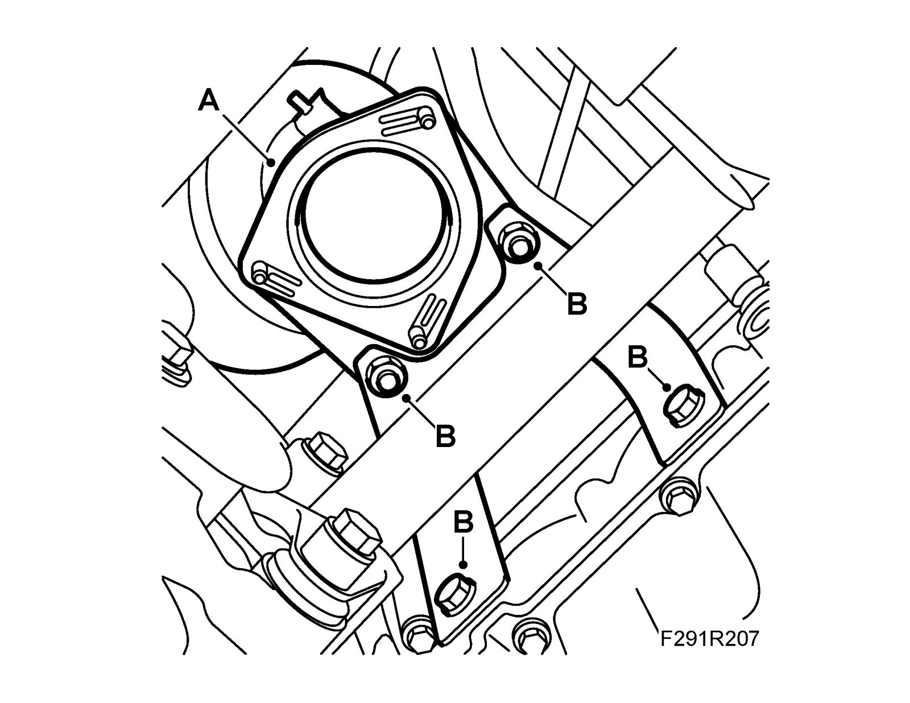
16. Insert the catalytic converter bracket bolts into the engine block and with new nuts for the studs (B).
17. Lower the car.
18. Lubricate the turbocharger studs with 30 20 971 Screw-thread paste
19. Fit the catalytic converter with new nuts (A) so that it rests evenly against the turbo.
Tightening torque 25 Nm (18 lbf ft)
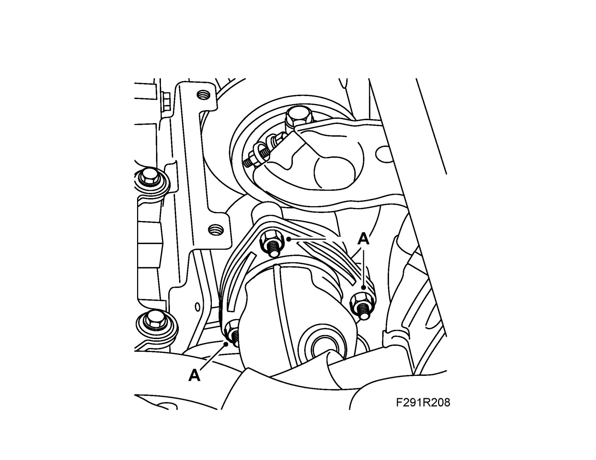
20. Raise the car.
21. Tighten the catalytic converter nuts and bolts a last time.
Tightening torque, bolt 22 Nm (16 lbf ft) (A)
Tightening torque, nut 25 Nm (18 lbf ft) (B)
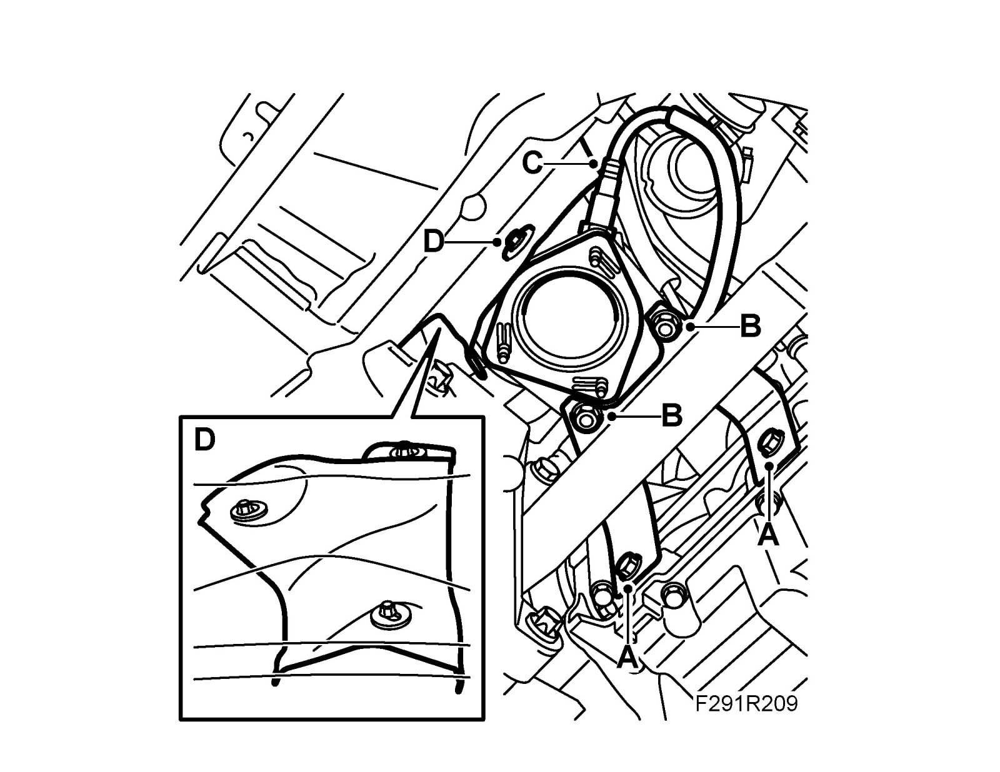
22. Lubricate the threads sparingly with 30 20 971 Screw-thread paste and fit the lower oxygen sensor.
Tightening torque 40 Nm (30 lbf ft) (C)
Important
Make sure cables to the oxygen sensor are not twisted or damaged.
23. Lift up the oxygen sensor cables.
Important
Make sure the cables are not exerted to chafing.
24. Fit the heat shield (D) onto the catalytic converter.
25. Clean the joint on the catalytic converter and the pipe connection to the front silencer.
26. Mount the joint clamp and fit the front pipe with a new gasket, new nuts and rubber mountings. Lubricate the studs with 30 20 971 Screw-thread paste.
27. Move over the joint clamp so that the pipe ends are in the middle of the clamp.
28. Tighten the joint with the catalytic converter (A).
Tightening torque 25 Nm (18 lbf ft)
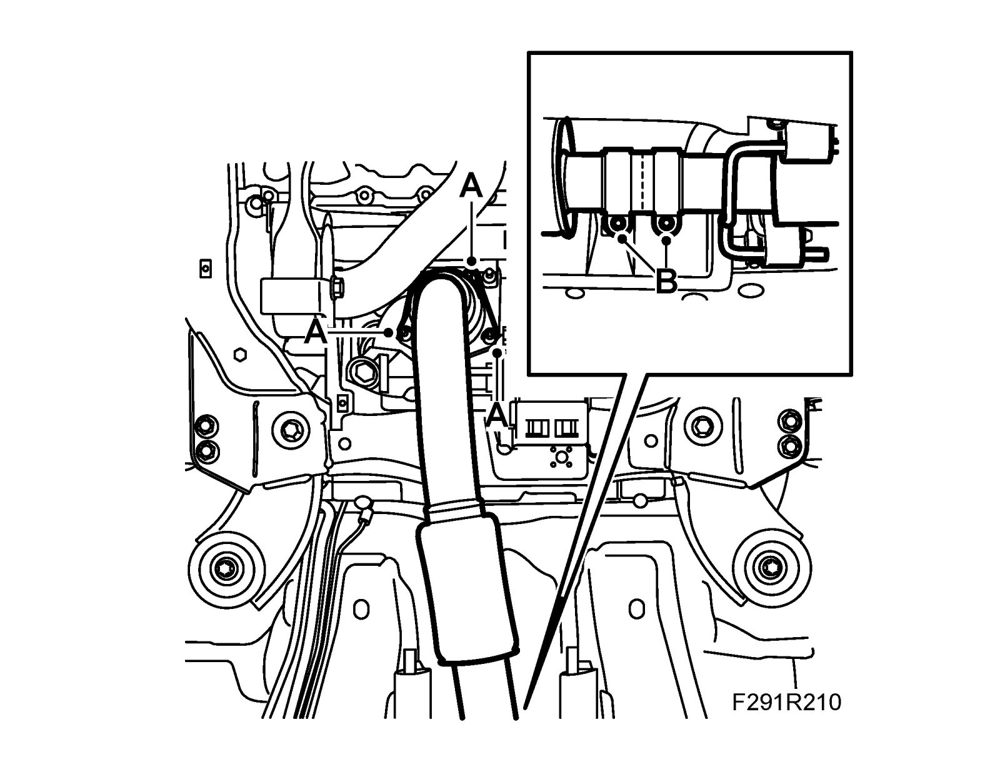
29. Tighten the joint clamp nuts (B).
Tightening torque 40 Nm (30 lbf ft).
30. Fit the turbocharger pressure pipe (A).
CV: Fit Chassis reinforcement, front supporting frame, CV
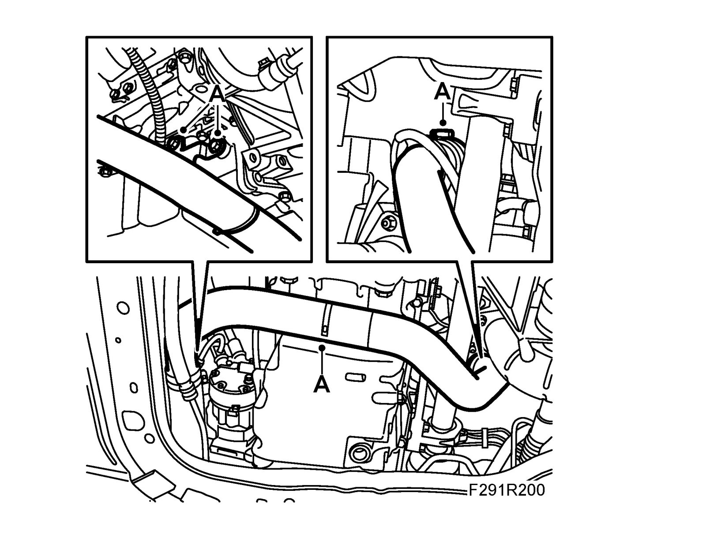
31. Fit the front spoiler shield. See Spoiler shield, To fit.
Tightening torque 25 Nm (18 lbf ft).
32. Lower the car.
33. Lubricate the threads sparingly with 30 20 971 Screw-thread paste and fit the upper oxygen sensor (A). Fit the coolant reservoir.
Tightening torque 40 Nm (30 lbf ft).
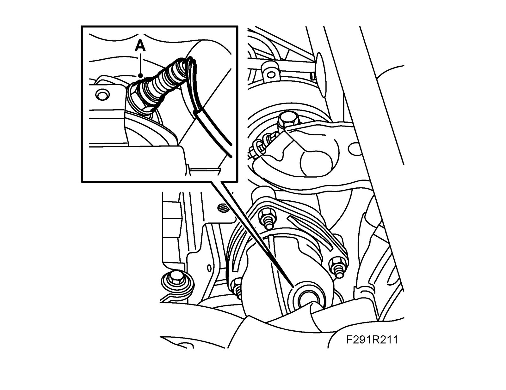
34. Plug in and secure the oxygen sensor connectors (A).
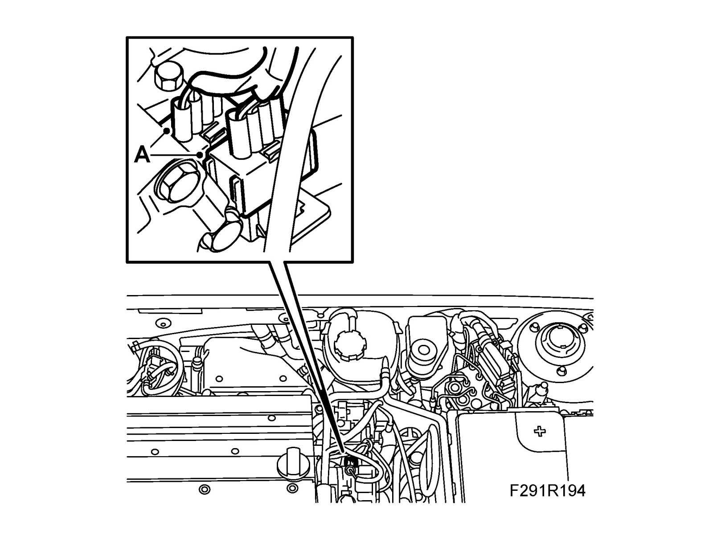
35. Fit the vacuum box (A) to the turbo.
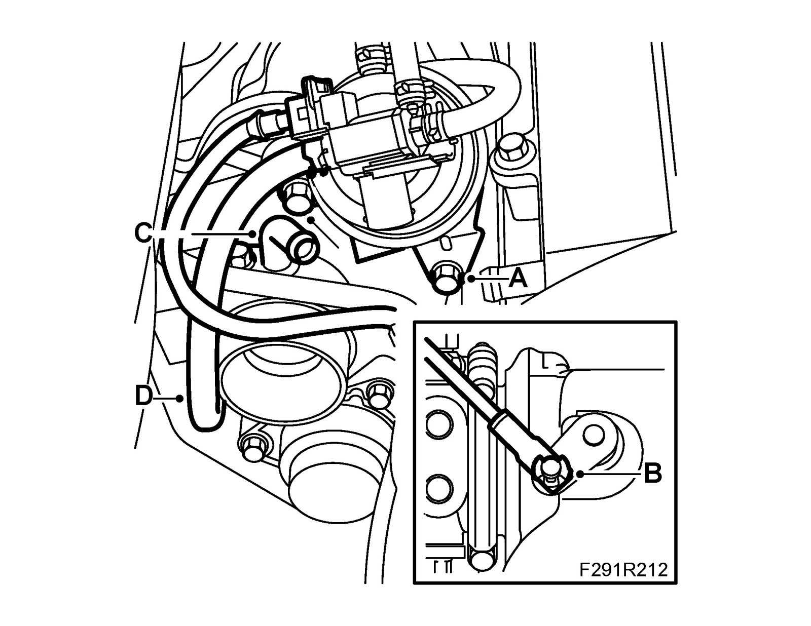
36. Align the control rod (B) onto the control arm and fit the retaining clip.
37. Fit the pipe for the crankcase ventilation (C).
38. Fit the solenoid valve hoses (D) to the turbo.
39. Fit the turbocharger heat shield (A).
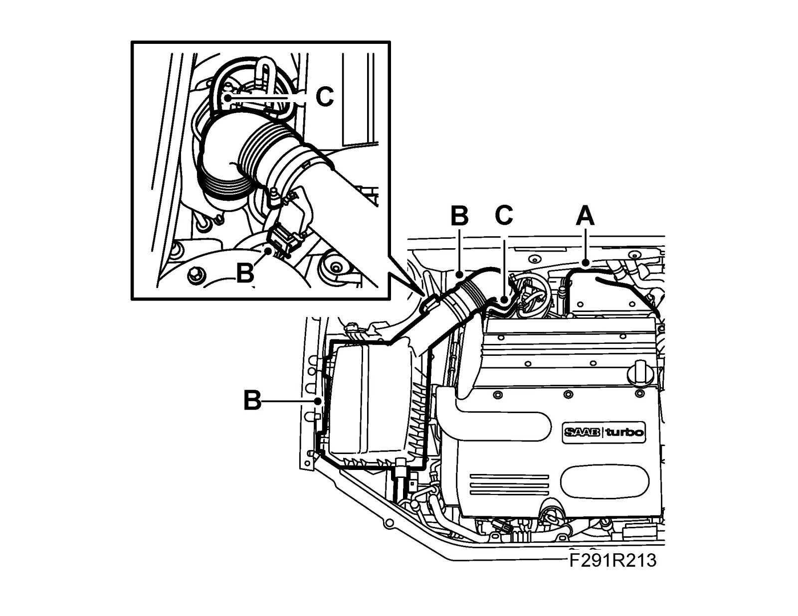
Important
To reduce the risk of hoses mounted on the delivery side of the turbocharger coming loose due to low friction at high air pressure, the hoses and connecting pieces must be cleaned thoroughly before fitting. Use a rag dampened with 93 160 907 Motip Dupli cleaning agent to wipe clean inside the ends of the hoses. Clean the connecting pieces as well. If hose clips are rusty or damaged, they must be replaced so the correct clamping force is maintained.
40. Fit the air cleaner casing and connect the intake hose to the turbo. Fit the filter and the air cleaner casing cover (B).
41. Fit the crankcase ventilation hose to the camshaft cover and turbo as well as the hose from the solenoid valve (C).
42. Fill with coolant to approx. 20 mm above the mark on the expansion tank.
43. Check for coolant leaks.
44. Check the oil and coolant level and top up as necessary.